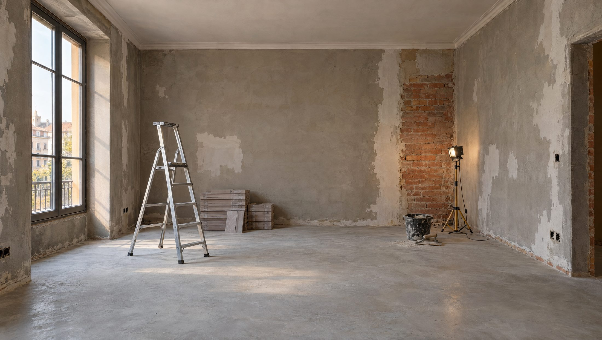
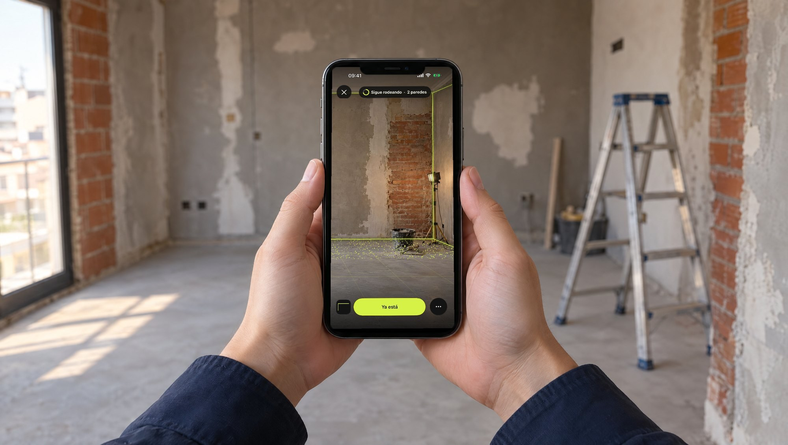
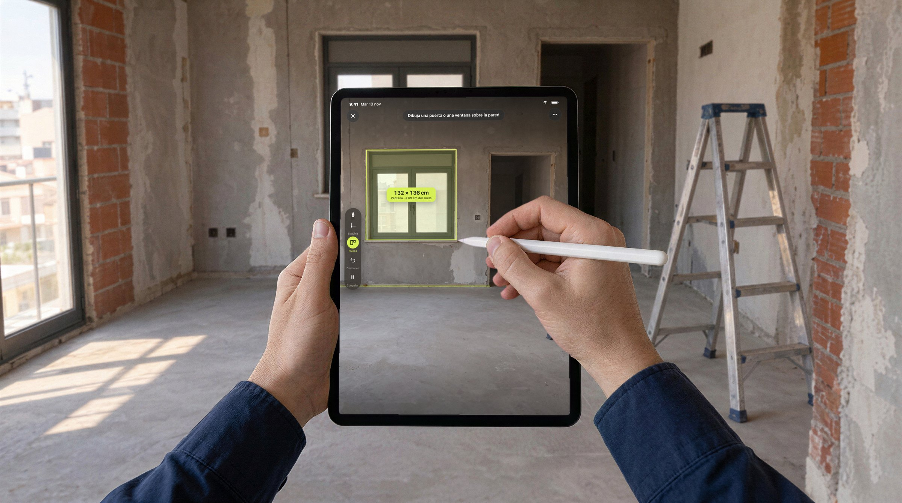
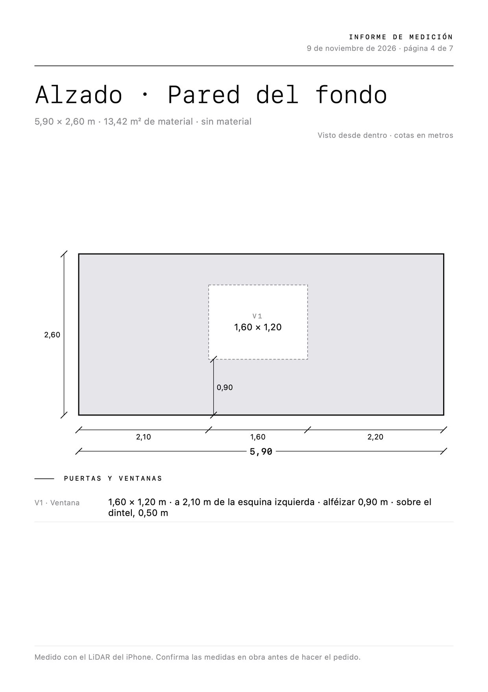
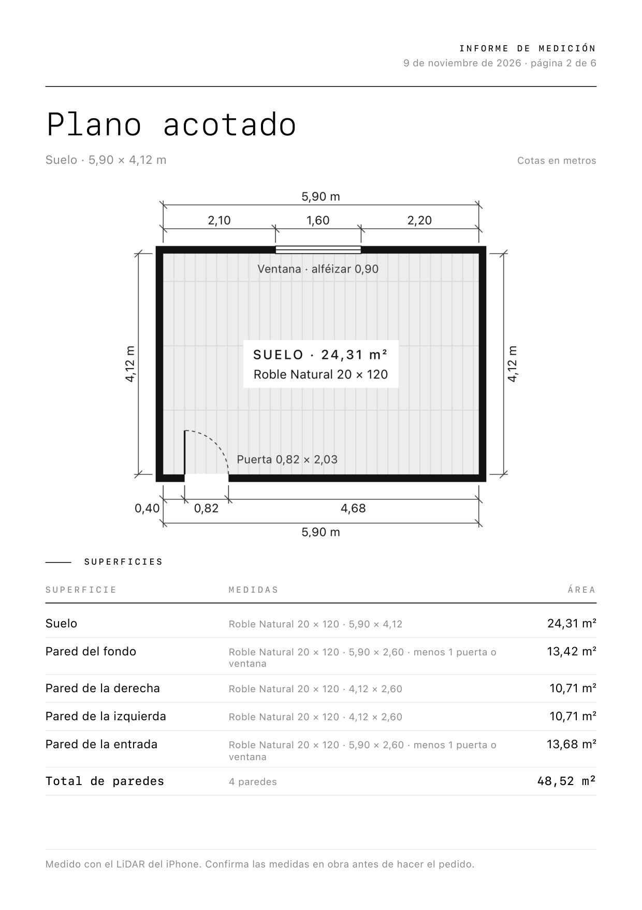
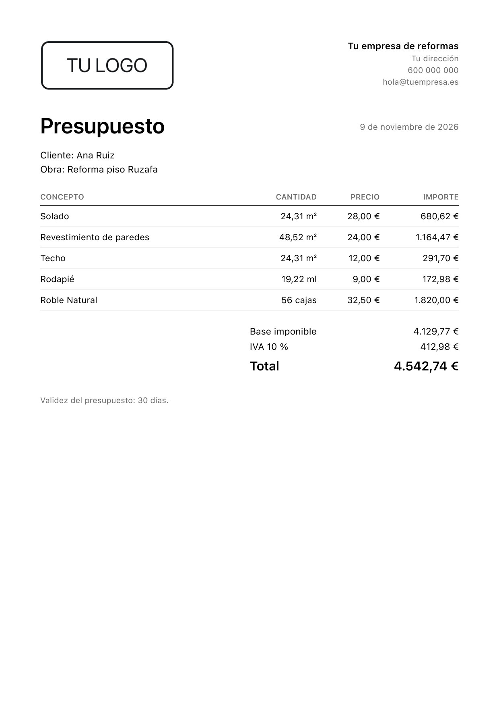

01MIDE
Rodea la habitación. Ya está.
El iPhone te enseña cómo moverte y un círculo te avisa cuando has dado la vuelta completa. Si la sala es difícil, toca cada pared o marca las esquinas.
- Escanear
- Paredes
- Suelo
- Una pared

Mide con el sensor LiDAR del iPhone Pro o del iPad Pro, corrige con tu cinta y envía el plano y el presupuesto antes de llegar a la furgoneta.
iPhone Pro y iPad Pro Gratis Sin suscripción Muy pronto en el App Store

Cinta. Libreta. Fotos sueltas. Y por la noche, Excel. Acotado te lo deja hecho en la obra.
En el iPad Pro, la punta del Apple Pencil marca cada esquina y dibuja cada puerta y cada ventana sobre la propia pared. Tú trazas; Acotado pone los centímetros.

Antes de tocar, una lupa te enseña dónde va a caer la esquina. Toca, y queda puesta.
Cambias de herramienta sin soltar el lápiz. Y apoya la mano tranquilo: mientras marcas, solo cuenta la punta.
Un rectángulo sobre la pared y la puerta o la ventana sale con su ancho, su alto y la altura a la que queda del suelo.
Deja la imagen quieta, apoya el iPad y sigue dibujando con calma. Lo que marcas cae en su sitio.
Descontado de los
metros de pared3,74 m²
El iPhone te enseña cómo moverte y un círculo te avisa cuando has dado la vuelta completa. Si la sala es difícil, toca cada pared o marca las esquinas.
Toca una medida y escribe la que te da el metro: mueve solo esa pared o ajusta todo el plano. Las esquinas se arrastran con el dedo.
Cotas totales y parciales, cada puerta y ventana con su código y sus medidas, alféizares y lo que queda sobre el dintel. Toca una puerta para elegir hacia dónde abre. En PDF para el cliente y en DXF para abrirlo en tu programa de CAD.
Solado, paredes descontando huecos, techo y rodapié, habitación a habitación. Si corriges el plano, todo se recalcula.
Las partidas salen de lo medido y tus precios se recuerdan para la próxima obra. Eliges el IVA y envías el PDF por donde quieras.
Prueba materiales a escala sobre su propia casa, en 3D o en realidad aumentada, y calcula cajas, cola y lechada.
Rodeas la habitación y salen el suelo, las paredes, las puertas y las ventanas.
Para la mayoría de salasApuntas a cada pared y la marcas, y después al techo.
Si hay muebles o el escaneo se resisteSolo la superficie del suelo, con sus esquinas.
Para un solado o una tarimaUn único paño, sin medir el resto de la sala.
Para alicatar o pintar una paredEl presupuesto y el plano salen de la app listos para enviar al cliente, al arquitecto o al almacén.



Documentos reales de Acotado, con datos de ejemplo.
PDF para el cliente y DXF para seguir trabajándolo en CAD.
Paredes y suelo, listos para abrir en tu programa de 3D.
En un archivo que abre tu hoja de cálculo.
Madera, mármol, microcemento, terrazo, zellige y pintura.
Fotos y apuntes de cada obra, en un PDF.
Tus obras y las de tus clientes se quedan en tu iPhone o en tu iPad. Solo salen cuando tú las envías.
Para medir hace falta el sensor LiDAR: lo llevan los iPhone Pro desde el 12 Pro y los iPad Pro desde 2020. Hace falta iOS 26 o iPadOS 26. En cualquier otro iPhone o iPad con esa versión puedes abrir la obra de ejemplo y ver el plano, el 3D y el presupuesto.
No. En el iPad puedes medir con el dedo, igual que en el iPhone. Si tienes un Apple Pencil, la app lo reconoce al primer toque: marcas las esquinas con la punta y dibujas las puertas y las ventanas sobre la pared. El doble toque para cambiar de herramienta necesita un Apple Pencil de 2.ª generación o un Apple Pencil Pro, y la lupa al acercar la punta, un iPad Pro con chip M2 o posterior.
Toda medición con LiDAR tiene un margen de error. En nuestra prueba en un recibidor real, las medidas del plano se desviaron apenas 1 cm respecto a la cinta, y la altura 2 cm (2,34 m frente a 2,32 m). Es una sola sala y cada obra es distinta: por eso puedes comprobar una pared con tu cinta y ajustar el plano. Confirma siempre las medidas en obra antes de cortar o de hacer un pedido.
La primera versión es gratis, sin compras dentro de la app y sin suscripción.
En tu iPhone o en tu iPad. La app no tiene cuentas ni analítica y funciona sin conexión. A internet solo sale para mirar si hay una versión nueva, sin enviar nada tuyo, y se puede apagar en Ajustes. Lee la política de privacidad.
Enciende las luces, abre las puertas, camina despacio y rodea la habitación hasta que veas «Habitación completa». Después comprueba una medida con tu cinta.
Escribe a nachogg1228@gmail.com.
Desde la propia obra.
Muy pronto en el App Store